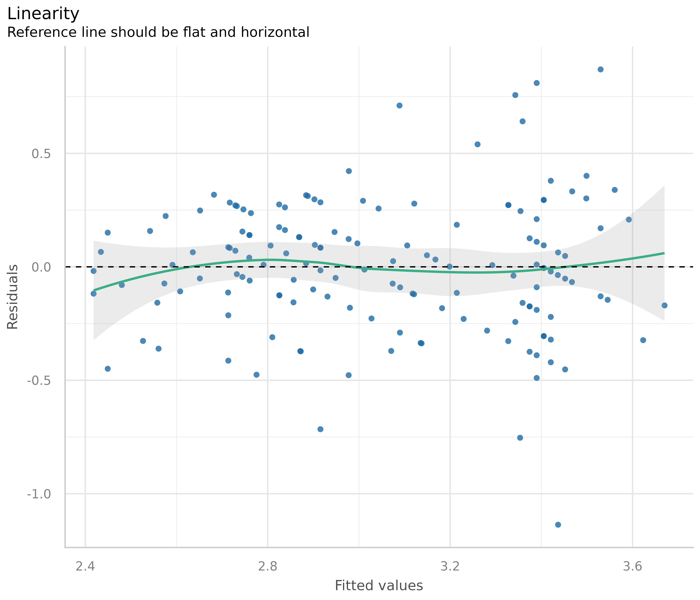
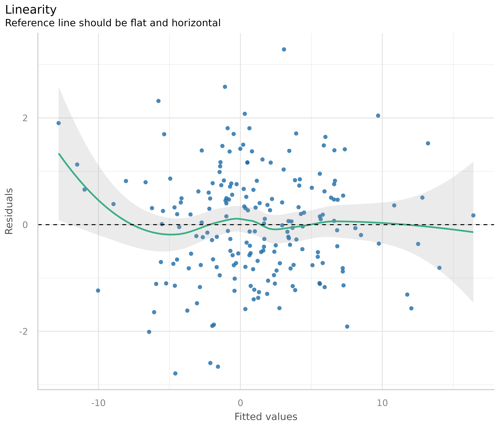
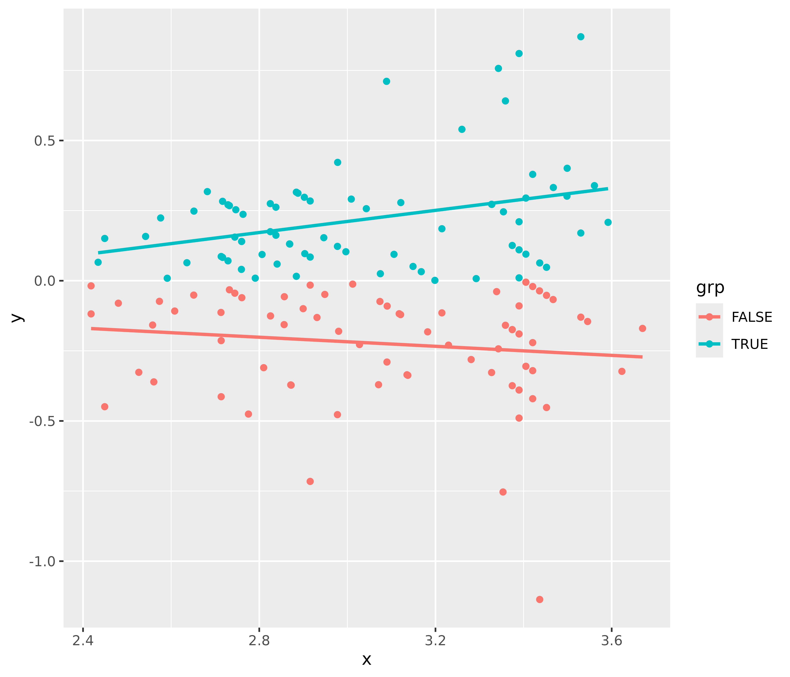
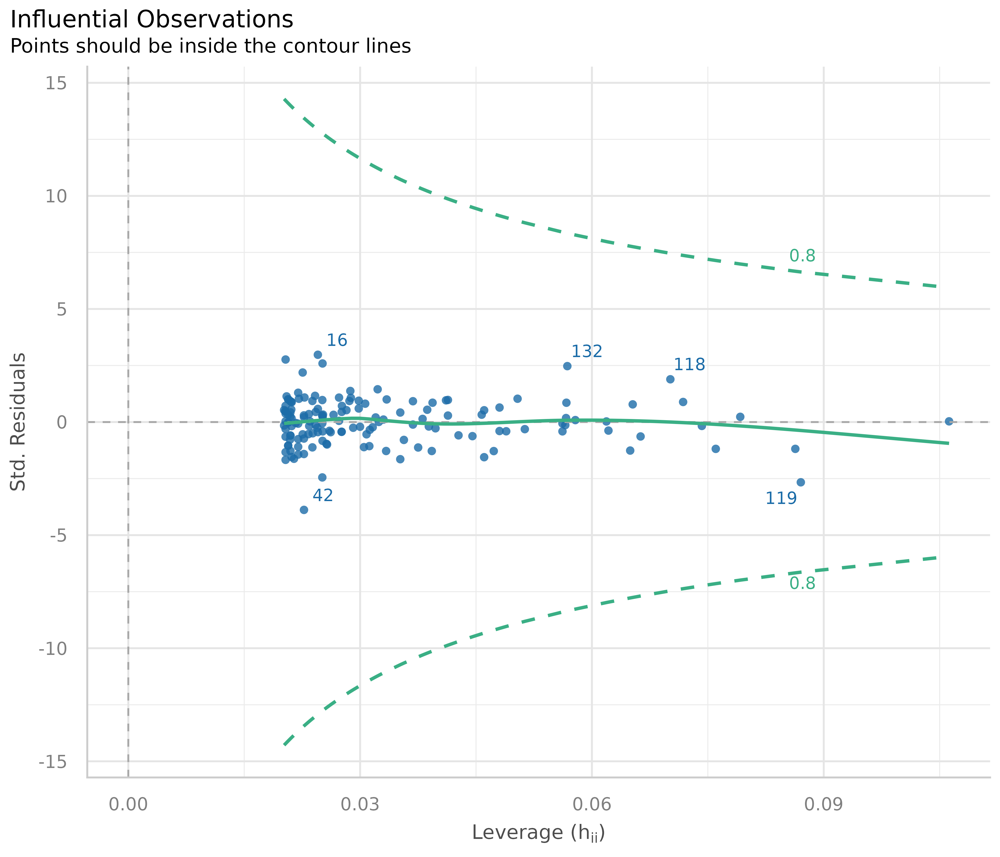

Make sure your model inference is accurate!
Model diagnostics is crucial, because parameter estimation, p-values and confidence interval depend on correct model assumptions as well as on the data. If model assumptions are violated, estimates can be statistically significant “even if the effect under study is null” (Gelman/Greenland 2019).
There are several problems associated with model diagnostics. Different types of models require different checks. For instance, normally distributed residuals are assumed to apply for linear regression, but is no appropriate assumption for logistic regression. Furthermore, it is recommended to carry out visual inspections, i.e. to generate and inspect so called diagnostic plots of model assumptions - formal statistical tests are often too strict and warn of violation of the model assumptions, although everything is fine within a certain tolerance range. But how should such diagnostic plots be interpreted? And if violations have been detected, how to fix them?
This vignette introduces the check_model() function of
the performance package, shows how to use this function
for different types of models and how the resulting diagnostic plots
should be interpreted. Furthermore, recommendations are given how to
address possible violations of model assumptions.
Most plots seen here can also be generated by their dedicated functions, e.g.:
- Posterior predictive checks:
check_predictions() - Homogeneity of variance:
check_heteroskedasticity() - Normality of residuals:
check_normality() - Multicollinearity:
check_collinearity() - Influential observations:
check_outliers() - Binned residuals:
binned_residuals() - Check for overdispersion:
check_overdispersion()
Linear models: Are all assumptions for linear models met?
We start with a simple example for a linear model.
Before we go into details of the diagnostic plots, let’s first look at the summary table.
library(parameters)
model_parameters(m1)
#> Parameter | Coefficient | SE | 95% CI | t(145) | p
#> ----------------------------------------------------------------------------
#> (Intercept) | 3.05 | 0.09 | [ 2.86, 3.23] | 32.52 | < .001
#> Species [versicolor] | -1.76 | 0.18 | [-2.12, -1.41] | -9.83 | < .001
#> Species [virginica] | -2.20 | 0.27 | [-2.72, -1.67] | -8.28 | < .001
#> Petal Length | 0.15 | 0.06 | [ 0.03, 0.28] | 2.38 | 0.018
#> Petal Width | 0.62 | 0.14 | [ 0.35, 0.89] | 4.57 | < .001There is nothing suspicious so far. Now let’s start with model
diagnostics. We use the check_model() function, which
provides an overview with the most important and appropriate diagnostic
plots for the model under investigation.

Now let’s take a closer look for each plot. To do so, we ask
check_model() to return a single plot for each check,
instead of arranging them in a grid. We can do so using the
panel argument. This returns a list of ggplot
plots.
# return a list of single plots
diagnostic_plots <- plot(check_model(m1, panel = FALSE))Posterior predictive checks
The first plot is based on check_predictions().
Posterior predictive checks can be used to “look for systematic
discrepancies between real and simulated data” (Gelman et al. 2014,
p. 169). It helps to see whether the type of model (distributional
family) fits well to the data (Gelman and Hill, 2007,
p. 158).
# posterior predicive checks
diagnostic_plots[[1]]
The blue lines are simulated data based on the model, if the model were true and distributional assumptions met. The green line represents the actual observed data of the response variable.
This plot looks good, and thus we would not assume any violations of model assumptions here.
Next, a different example. We use a Poisson-distributed outcome for our linear model, so we should expect some deviation from the distributional assumption of a linear model.
set.seed(99)
d <- iris
d$skewed <- rpois(150, 1)
m2 <- lm(skewed ~ Species + Petal.Length + Petal.Width, data = d)
out <- check_predictions(m2)
plot(out)
As you can see, the green line in this plot deviates visibly from the blue lines. This may indicate that our linear model is not appropriate, since it does not capture the distributional nature of the response variable properly.
How to fix this?
The best way, if there are serious concerns that the model does not fit well to the data, is to use a different type (family) of regression models. In our example, it is obvious that we should better use a Poisson regression.
Plots for discrete outcomes
For discrete or integer outcomes (like in logistic or Poisson
regression), density plots are not always the best choice, as they look
somewhat “wiggly” around the actual values of the dependent variables.
In this case, use the type argument of the
plot() method to change the plot-style. Available options
are type = "discrete_dots" (dots for observed and
replicated outcomes), type = "discrete_interval" (dots for
observed, error bars for replicated outcomes) or
type = "discrete_both" (both dots and error bars).
set.seed(99)
d <- iris
d$skewed <- rpois(150, 1)
m3 <- glm(
skewed ~ Species + Petal.Length + Petal.Width,
family = poisson(),
data = d
)
out <- check_predictions(m3)
plot(out, type = "discrete_both")
Linearity
This plot helps to check the assumption of linear relationship. It shows whether predictors may have a non-linear relationship with the outcome, in which case the reference line may roughly indicate that relationship. A straight and horizontal line indicates that the model specification seems to be ok.
# linearity
diagnostic_plots[[2]]
Now to a different example, where we simulate data with a quadratic relationship of one of the predictors and the outcome.
set.seed(1234)
x <- rnorm(200)
z <- rnorm(200)
# quadratic relationship
y <- 2 * x + x^2 + 4 * z + rnorm(200)
d <- data.frame(x, y, z)
m <- lm(y ~ x + z, data = d)
out <- plot(check_model(m, panel = FALSE))
# linearity plot
out[[2]]
How to fix this?
If the green reference line is not roughly flat and horizontal, but rather - like in our example - U-shaped, this may indicate that some of the predictors probably should better be modeled as quadratic term. Transforming the response variable might be another solution when linearity assumptions are not met.
# model quadratic term
m <- lm(y ~ x + I(x^2) + z, data = d)
out <- plot(check_model(m, panel = FALSE))
# linearity plot
out[[2]]
Some caution is needed when interpreting these plots. Although these plots are helpful to check model assumptions, they do not necessarily indicate so-called “lack of fit”, e.g. missed non-linear relationships or interactions. Thus, it is always recommended to also look at effect plots, including partial residuals.
Homogeneity of variance - detecting heteroscedasticity
This plot helps to check the assumption of equal (or constant) variance, i.e. homoscedasticity. To meet this assumption, the variance of the residuals across different values of predictors is similar and does not notably increase or decrease. Hence, the desired pattern would be that dots spread equally above and below a roughly straight, horizontal line and show no apparent deviation.
Usually, this can be easily inspected when plotting the residuals against fitted values, possibly adding trend lines to the plot. If these are horizontal and parallel, everything is ok. If the spread of the dot increases (decreases) across the x-axis, the model may suffer from heteroscedasticity.
library(ggplot2)
d <- data.frame(
x = fitted(m1),
y = residuals(m1),
grp = as.factor(residuals(m1) >= 0)
)
ggplot(d, aes(x, y, colour = grp)) +
geom_point() +
geom_smooth(method = "lm", se = FALSE)
For our example model, we see that our model indeed violates the assumption of homoscedasticity.
But why does the diagnostic plot used in check_model()
look different? check_model() plots the square-root of the
absolute values of residuals. This makes the visual inspection slightly
easier, as you only have one line that needs to be judged. A roughly
flat and horizontal green reference line indicates homoscedasticity. A
steeper slope of that line indicates that the model suffers from
heteroscedasticity.
# homoscedasticiy - homogeneity of variance
diagnostic_plots[[3]]
How to fix this?
There are several ways to address heteroscedasticity.
Calculating heteroscedasticity-consistent standard errors accounts for the larger variation, better reflecting the increased uncertainty. This can be easily done using the parameters package, e.g.
parameters::model_parameters(m1, vcov = "HC3"). A detailed vignette on robust standard errors can be found here.The heteroscedasticity can be modeled directly, e.g. using package glmmTMB and the dispersion formula, to estimate the dispersion parameter and account for heteroscedasticity (see Brooks et al. 2017).
Transforming the response variable, for instance, taking the
log(), may also help to avoid issues with heteroscedasticity.Weighting observations is another remedy against heteroscedasticity, in particular the method of weighted least squares.
Influential observations - outliers
Outliers can be defined as particularly influential observations, and this plot helps detecting those outliers. Cook’s distance (Cook 1977, Cook & Weisberg 1982) is used to define outliers, i.e. any point in this plot that falls outside of Cook’s distance (the dashed lines) is considered an influential observation.
# influential observations - outliers
diagnostic_plots[[4]]
In our example, everything looks well.
How to fix this?
Dealing with outliers is not straightforward, as it is not recommended to automatically discard any observation that has been marked as “an outlier”. Rather, your domain knowledge must be involved in the decision whether to keep or omit influential observation. A helpful heuristic is to distinguish between error outliers, interesting outliers, and random outliers (Leys et al. 2019). Error outliers are likely due to human error and should be corrected before data analysis. Interesting outliers are not due to technical error and may be of theoretical interest; it might thus be relevant to investigate them further even though they should be removed from the current analysis of interest. Random outliers are assumed to be due to chance alone and to belong to the correct distribution and, therefore, should be retained.
Multicollinearity
This plot checks for potential collinearity among predictors. In a nutshell multicollinearity means that once you know the effect of one predictor, the value of knowing the other predictor is rather low. Multicollinearity might arise when a third, unobserved variable has a causal effect on each of the two predictors that are associated with the outcome. In such cases, the actual relationship that matters would be the association between the unobserved variable and the outcome.
Multicollinearity should not be confused with a raw strong correlation between predictors. What matters is the association between one or more predictor variables, conditional on the other variables in the model.
If multicollinearity is a problem, the model seems to suggest that the predictors in question don’t seems to be reliably associated with the outcome (low estimates, high standard errors), although these predictors actually are strongly associated with the outcome, i.e. indeed might have strong effect (McElreath 2020, chapter 6.1).
# multicollinearity
diagnostic_plots[[5]]
The variance inflation factor (VIF) indicates the magnitude of multicollinearity of model terms. The thresholds for low, moderate and high collinearity are VIF values less than 5, between 5 and 10 and larger than 10, respectively (James et al. 2013). Note that these thresholds, although commonly used, are also criticized for being too high. Zuur et al. (2010) suggest using lower values, e.g. a VIF of 3 or larger may already no longer be considered as “low”.
Our model clearly suffers from multicollinearity, as all predictors have high VIF values.
How to fix this?
Usually, predictors with (very) high VIF values should be removed from the model to fix multicollinearity. Some caution is needed for interaction terms. If interaction terms are included in a model, high VIF values are expected. This portion of multicollinearity among the component terms of an interaction is also called “inessential ill-conditioning”, which leads to inflated VIF values that are typically seen for models with interaction terms (Francoeur 2013). In such cases, try centering the involved interaction terms, which can reduce multicollinearity (Kim and Jung 2024), or re-fit your model without interaction terms and check this model for collinearity among predictors.
Normality of residuals
In linear regression, residuals should be normally distributed. This can be checked using so-called Q-Q plots (quantile-quantile plot) to compare the shapes of distributions. This plot shows the quantiles of the studentized residuals versus fitted values.
Usually, dots should fall along the green reference line. If there is some deviation (mostly at the tails), this indicates that the model doesn’t predict the outcome well for the range that shows larger deviations from the reference line. In such cases, inferential statistics like the p-value or coverage of confidence intervals can be inaccurate.
# normally distributed residuals
diagnostic_plots[[6]]
In our example, we see that most data points are ok, except some observations at the tails. Whether any action is needed to fix this or not can also depend on the results of the remaining diagnostic plots. If all other plots indicate no violation of assumptions, some deviation of normality, particularly at the tails, can be less critical.
How to fix this?
Here are some remedies to fix non-normality of residuals, according to Pek et al. 2018.
For large sample sizes, the assumption of normality can be relaxed due to the central limit theorem - no action needed.
Calculating heteroscedasticity-consistent standard errors can help. See section Homogeneity of variance for details.
Bootstrapping is another alternative to resolve issues with non-normally residuals. Again, this can be easily done using the parameters package, e.g.
parameters::model_parameters(m1, bootstrap = TRUE)orparameters::bootstrap_parameters().
References
Brooks ME, Kristensen K, Benthem KJ van, Magnusson A, Berg CW, Nielsen A, et al. glmmTMB Balances Speed and Flexibility Among Packages for Zero-inflated Generalized Linear Mixed Modeling. The R Journal. 2017;9: 378-400.
Cook RD. Detection of influential observation in linear regression. Technometrics. 1977;19(1): 15-18.
Cook RD and Weisberg S. Residuals and Influence in Regression. London: Chapman and Hall, 1982.
Francoeur RB. Could Sequential Residual Centering Resolve Low Sensitivity in Moderated Regression? Simulations and Cancer Symptom Clusters. Open Journal of Statistics. 2013:03(06), 24-44.
Gelman A, Carlin JB, Stern HS, Dunson DB, Vehtari A, and Rubin DB. Bayesian data analysis. (Third edition). CRC Press, 2014
Gelman A, Greenland S. Are confidence intervals better termed “uncertainty intervals”? BMJ. 2019;l5381. doi:10.1136/bmj.l5381
Gelman A, and Hill J. Data analysis using regression and multilevel/hierarchical models. Cambridge; New York. Cambridge University Press, 2007
James, G., Witten, D., Hastie, T., and Tibshirani, R. (eds.).An introduction to statistical learning: with applications in R. New York: Springer, 2013
Kim, Y., & Jung, G. (2024). Understanding linear interaction analysis with causal graphs. British Journal of Mathematical and Statistical Psychology, 00, 1–14.
Leys C, Delacre M, Mora YL, Lakens D, Ley C. How to Classify, Detect, and Manage Univariate and Multivariate Outliers, With Emphasis on Pre-Registration. International Review of Social Psychology, 2019
McElreath, R. Statistical rethinking: A Bayesian course with examples in R and Stan. 2nd edition. Chapman and Hall/CRC, 2020
Pek J, Wong O, Wong ACM. How to Address Non-normality: A Taxonomy of Approaches, Reviewed, and Illustrated. Front Psychol (2018) 9:2104. doi: 10.3389/fpsyg.2018.02104
Zuur AF, Ieno EN, Elphick CS. A protocol for data exploration to avoid common statistical problems: Data exploration. Methods in Ecology and Evolution (2010) 1:3-14.